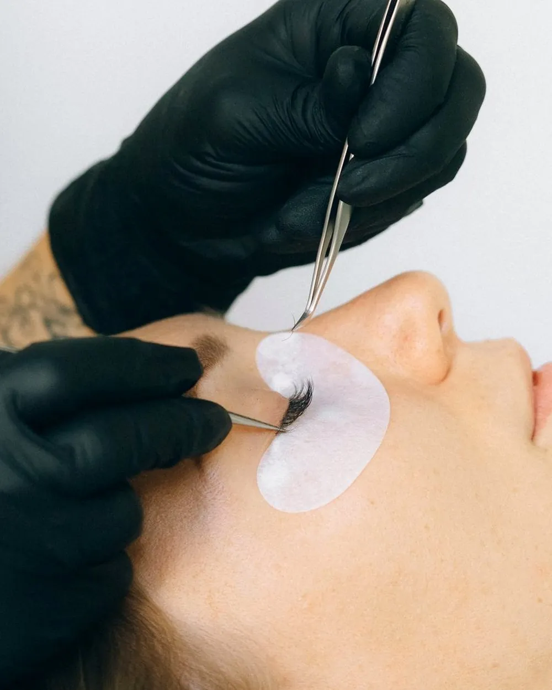

Yanchep · new clients welcome
Book your appointment
Not sure which shape suits you? That is what the consultation is for. Bring a photo.

Style guide · Lash mapping
Choosing lash extensions is two decisions, and most people only know about one. The first is how full the set is. The second is where the length goes, and that one changes the shape of your eye far more than fullness does.
Fullness is the set type: classic, hybrid, volume or mega volume. It decides how dense and dark the lash line looks. That is covered in classic, hybrid or volume.
Shape is the map: which lengths go where along the eye. Two people can wear the same classic set and look completely different because one is mapped longest at the centre and the other longest at the outer corner.
You do not need to know any of the names below to book. Mapping is worked out at the start of every appointment from your eye shape. Knowing the names just makes it easier to say what you like.
Natural. Follows your own lash line, short at the inner corner and gradually longer towards the outer third. It looks like your lashes on a very good day, and it suits almost everyone.
Doll eye, also called open eye. The longest lashes sit over the centre of the eye, above the pupil. It makes the eye look rounder, bigger and more awake.
Cat eye. Length builds steadily to the outer corner. It draws the eye outwards and gives a longer, more winged look.
Squirrel, sometimes called kitten. The longest point sits under the arch of the brow, then the lengths drop again before the outer corner. It gives the lift of a cat eye without weight on the very outer lashes, which matters more than it sounds.
| Eye shape | Usually suits | Go easy on |
|---|---|---|
| Almond | Almost anything; natural or cat eye | Nothing in particular |
| Round | Cat eye or squirrel, to lengthen | Doll eye, unless you want rounder |
| Hooded | Doll eye or squirrel, stronger curl | Heavy cat eye |
| Downturned | Squirrel, to lift the outer third | Long lashes at the very corner |
| Upturned | Natural or doll eye | Extreme cat eye |
| Close-set | Cat eye, length towards the outside | Length at the inner corner |
| Wide-set | Doll eye, length towards the centre | Extreme cat eye |
| Deep-set | Natural or doll eye, softer curl | Curls that hit the brow bone |
| Monolid | Doll eye, stronger curl | Very soft curls that point down |
The classic mistake is a heavy cat eye on an eye that turns down or has a hood. The outer corner lashes are the finest on the eye and they point downwards. Put the longest extensions there and they follow the lash down, so instead of lifting the eye the set pulls it down.
This is why a squirrel map exists, and why a look copied from a photo does not always work on a different face. It is also why a good consultation sometimes ends with a different shape from the one you asked for.
Length. An extension can only be a little longer than the natural lash it sits on, or it is too heavy for it. If your own lashes are short, very long extensions are not an honest option, whatever the photo shows. Density can be added instead.
Curl. Straight or downward-pointing natural lashes need a stronger curl to open the eye. Hooded and deep-set eyes need the curl chosen so the lashes clear the lid or brow bone instead of brushing against it. A softer curl looks more natural on lashes that already curl upwards.
Bring a photo, of yourself in a set you liked or of someone whose eye shape is close to yours. A photo of a look on a very different eye is still useful, as long as you are open to hearing how it would translate.
Say how you want to feel as well as how you want to look. “Awake without makeup” and “done for a wedding” lead to different maps even in the same set type.
And say if you wear glasses. Length is kept short enough that the lashes do not touch the lenses.
Questions
A classic or light hybrid set in a natural map, which follows your own lash line and adds length gradually towards the outer third of the eye.
Where the longest lashes sit. Cat eye puts them at the outer corner, which lengthens the eye. Doll eye puts them over the centre, which makes the eye look rounder and more open.
Usually doll eye or squirrel, with a curl chosen so the lashes clear the hood. A heavy cat eye tends to disappear under the hood or drag the outer corner down.
Cat eye or squirrel, which draw the eye outwards and balance the roundness. Doll eye makes round eyes look rounder, which is fine if that is the look you want.
Only a little longer than your own. An extension much longer than the natural lash is too heavy for it. Fullness can be added with a hybrid or volume set instead of extra length.
Yes. Say so at the consultation and the lengths are kept short enough that the lashes do not touch the lenses.
Keep reading
Yanchep · new clients welcome
Not sure which shape suits you? That is what the consultation is for. Bring a photo.